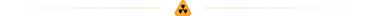

S.T.A.L.K.E.R. 2: Heart of Chornobyl
S.T.A.L.K.E.R. 2: Heart of Chornobyl — некстген-продовження видатної франшизи від GSC Game World, яку тепло зустріли гравці та критики. Пориньте у Чорнобильську зону відчуження, сповнену небезпечних ворогів, смертельних аномалій і потужних артефактів.
Унікальний геймплей з елементами шутера від першої особи, імерсивного симулятора й горору. Будьте частиною нелінійної історії в атмосфері моторошної постапокаліптичної фантастики. Ваш обов’язок — прийняти рішення, що вплинуть на долю Зони та її мешканців. Рушій Unreal Engine 5 дає змогу досягти неймовірного рівня графіки, гідної називатися справжнім некстгеном. Офіційна підтримка модифікацій дасть творчим сталкерам Волю розширювати та збагачувати ігровий світ. Багатокористувацький режим з’явиться незабаром після релізу як безкоштовне оновлення для гри.